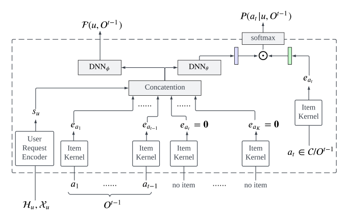
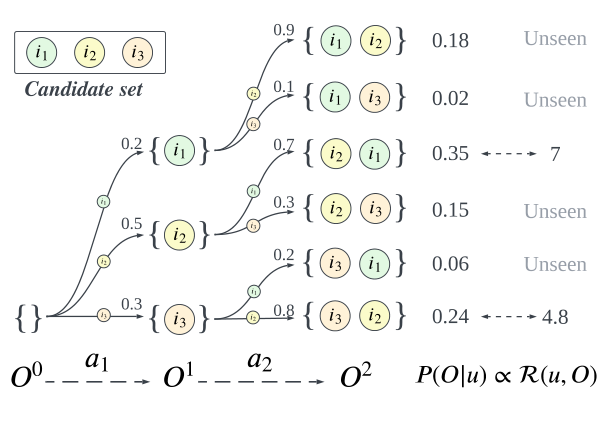

Generative Flow Network for Listwise Recommendation (生成流网络驱动的列表级推荐)
- 会议/期刊: KDD 2023 (29th ACM SIGKDD)
- 作者与机构: Shuchang Liu, Qingpeng Cai, Dong Zheng, Peng Jiang (快手); Zhankui He, Julian McAuley (UCSD); Bowen Sun (北大); Kun Gai
- 推荐链路定位: 重排 / 端到端列表生成式
- 研究方向: 生成式推荐 / 强化学习与动态探索
- 论文原文: https://arxiv.org/abs/2306.02239v4
- 开源代码: https://github.com/CharlieMat/GFN4Rec
TL;DR (1分钟核心速览)
点式打分模型无法建模同一曝光列表内物品的相互影响，而现有列表级生成方法（ListCVAE）虽多样性高却准确率崩塌，交叉熵训练又使策略迅速塌缩到 top-K 局部最优。本文提出 GFN4Rec，把自回归选品过程建模为生成树上的概率流，用轨迹平衡（TB）/细节平衡（DB）损失令列表生成概率正比于其奖励（对数尺度匹配），并引入 \(b_z,b_r,b_f\) 三个偏置稳定训练。在两个真实数据集构建的在线模拟器 + 离线评测中，KR1K 上平均奖励较最强基线 PRM 提升 11.0%，探索模式物品覆盖率较 CF/PRM 提升约 4 倍。
Background & Motivation (背景与核心矛盾)
- 主流范式: 点式/成对 LTR 为每个物品独立打分后取 top-\(K\)；列表级方法分为"学评估器再指导生成"（PRM 类 reranker）与"直接学列表生成器"（ListCVAE 类 CVAE）。
- 前人局限: ① 评估器范式高度依赖评估精度，级联误差难控；② 生成器范式使用交叉熵，使 \(\log P(i|u)\to R(u,i)\)，独立聚合后\(P(O|u)\to\prod e^{R(u,a_t)}\)，对高分物品指数级敏感，策略迅速收敛到少数高分列表，多样性骤降。
- 核心洞察 (Key Insight): 若把对齐目标从"概率-奖励"改为"对数概率-对数奖励"，即 \(\log P(O|u)\to\log R(u,O)\)，则\(P(O|u)\propto R(u,O)\) 线性可分，略低分列表仍保留可观曝光概率——这正是 GFlowNet 的流匹配性质，天然缓解 mode collapse。
- 本文切入点: 将列表生成视为树上的一次完整轨迹，用流匹配损失替换交叉熵，把"探索多样性"内嵌进训练目标而非靠采样温度外挂。
Method (核心方法设计)
1. 整体框架 (Overall Architecture)
输入一个用户请求 \(u\)（静态画像\(X_u\)+ 最近\(L=50\)条行为历史\(H_u\)），Transformer 历史编码器与 DNN 特征模块输出用户状态\(\boldsymbol{s}_u\)；生成阶段从空列表\(O_0=\varnothing\)出发，每步由物品选择模型在候选集\(\mathcal{C}\setminus O_{t-1}\)上做 softmax 采样\(a_t\sim P_\theta(i|u,O_{t-1})\)并追加到列表尾部，共\(K\)步得到\(O_K\)；同时一个以\(\boldsymbol{s}_u\)与当前部分列表为输入的流估计器\(F_\phi(u,O_t)\) 给出该节点的流量，用于计算 TB/DB 损失；推理时关闭采样改为贪心取 top 分（greedy），或保留采样即 GFN4Rec(Explore)。
flowchart TD
A["用户请求 u: X_u + H_u(L=50)"] --> B["Transformer 请求编码器 → s_u"]
B --> C["自回归物品选择 P_θ(a_t|u,O_{t-1})"]
C --> D["生成树节点 O_t 与流估计 F_φ(u,O_t)"]
D --> E["TB/DB 流-奖励匹配损失"]
C --> F["贪心/采样解码出 K 长列表"]
2. 关键设计拆解 (Key Designs)
- 生成树与轨迹概率（把组合空间变成树上的流量）：列表组合空间 \(O(|\mathcal{C}|^K)\)无法枚举，作者改为有序自回归生成，使每条列表唯一对应一条根到叶轨迹，且树结构保证反向概率恒为 1：\(P(O|u)=\prod_{t=1}^{K}P_\theta(a_t|u,O_{t-1})\)。由此列表概率可被逐边分解、并行优化，也自然刻画了"已选物品对未来选择的影响"。

-
对数尺度奖励匹配（TB/DB 损失，核心去塌缩机制）：令源节点流量 \(F(u,\varnothing)\)表征用户奖励先验，叶节点满足\(b_zF(u,O)=R(u,O)\)。轨迹平衡损失直接对齐整条轨迹： $\(\mathcal{L}_{TB}=\left(\log b_z+\log\frac{F_\phi(u,\varnothing)\prod_{t=1}^{K}P_\theta(a_t|u,O_{t-1})}{R(u,O_K)+b_r}\right)^2\)$ 细节平衡则逐边约束（叶节点用 \(\left(\log F_\phi(u,O_K)-\log(R(u,O_K)+b_r)\right)^2\)，中间节点用\(\left(\frac{\log b_z}{K}+\log\frac{F_\phi(u,O_{t-1})P_\theta(a_t|u,O_{t-1})}{F_\phi(u,O_t)}\right)^2\)）。关键在于分母是奖励而非\(e^{R}\)，使低分列表不被指数压制，探索空间得以保留。
-
训练稳定性偏置与训练目标：由于 \(P_\theta(a_t|\cdot)\approx 1/|\mathcal{I}|\)远小于奖励与流量尺度，取对数后负值方差极大、开局梯度失控，故引入奖励平滑\(b_r\)、全局归一\(b_z\)与前向概率平移\(b_f\)（即\(\log(P+b_f)\)，取\(b_f=1\)可保证非负）。总损失即\(\mathcal{L}_{TB}\)或\(\mathcal{L}_{DB}\)，无需负采样（奖励自带权重），在线训练采用"半新样本 + 半全缓冲均匀采样"防灾难遗忘，batch=128。
Experimental Setup & Evaluation Protocol (实验设置与评估协议)
| 数据集 | #Users | #Items | #Interactions | 过滤/密度 | 特征/场景说明 |
|---|---|---|---|---|---|
| ML1M | 6,400 | 3,706 | 1,000,208 | 20-core | 评分转为 click/like/star 三类行为，\(R\in[0,3]\) |
| KR1K | 1,000 | 69,219 | 2,597,865 | 20-core | 快手短视频 7 类行为（hate 权重 \(-1\)），\(R\in[-1,6]\) |
- 数据划分与防穿越: 历史切成 \(K=6\)的片段，每段视作一条观测列表；离线评测取每用户最后\(N\)条交互为测试（ML1M\(N=1\)，KR1K\(N=4\)），其余训练。另建随机用户响应模拟器（AUC 0.7–0.9，含物品相似度抑制项\(\rho=0.2/0.1\)）做在线学习回路。
- 排名评测协议: 全候选打分（ranking 场景 \(\mathcal{C}=\mathcal{I}\)；reranking 场景\(\mathcal{C}\subset\mathcal{I}\)），指标为奖励化 R-NDCG 与 R-MRR（以\(R(u,i)\) 替代相关性标签），另报 Avg.R / MaxR / Coverage / ILD。
- 对比基线与超参: CF、ListCVAE (\(\beta\)网格)、RerankCF、PRM（PV loss 系数网格）；所有模型共享同一用户请求编码器；GFN4Rec 网格搜索\(b_r\in\{0.1,0.3,1.0,1.5\}\)、\(b_f\in\{0.1\!-\!2.0\}\)、\(b_z\in\{0.1,0.5,1.0,1.5\}\)，5 随机种子均值。
Key Experimental Results (实验关键数据)
1. 主实验对比 (Main Results)
在线学习（表 2，模拟器实测）：
| 方法 | ML1M Avg.R | ML1M MaxR | ML1M Coverage | ML1M ILD | KR1K Avg.R | KR1K MaxR | KR1K Coverage | KR1K ILD |
|---|---|---|---|---|---|---|---|---|
| CF | 2.073 | 2.939 | 13.963 | 0.529 | 2.253 | 4.039 | 100.969 | 0.543 |
| ListCVAE | 0.940 | 2.209 | 262.420 | 0.796 | 2.075 | 4.042 | 446.100 | 0.565 |
| RerankCF | — | — | — | — | — | — | — | — |
| PRM | 2.156 | 2.967 | 18.647 | 0.559 | 2.174 | 3.811 | 27.520 | 0.538 |
| GFN4Rec(Explore) | 2.047 | 2.938 | 87.660 | 0.617 | 2.212 | 3.984 | 415.515 | 0.591 |
| GFN4Rec | 2.172 | 2.972 | 15.693 | 0.565 | 2.414 | 4.054 | 21.267 | 0.520 |
离线训练模型再上模拟器（表 4 节选）：ML1M R-NDCG(online) 0.665 / R-MRR(online) 0.0848（vs PRM 0.636 / 0.0812，提升 +4.6%）；KR1K R-NDCG(test) 0.362、R-MRR(test) 0.0421 为最优。
2. 消融实验 (Ablation Study)
KR1K 离线训练下 TB vs. DB（原文表 5；其 Coverage 行与 Avg.R 完全同值，疑为排版笔误，故未列）：
| 变体 | Avg.R | MaxR | ILD | R-NDCG(online) | R-MRR(online) | R-NDCG(test) | R-MRR(test) |
|---|---|---|---|---|---|---|---|
| GFN_TB | 1.962 | 3.870 | 0.630 | 0.393 | 0.0834 | 0.362 | 0.0421 |
| GFN_DB | 2.034 | 3.905 | 0.582 | 0.400 | 0.0859 | 0.363 | 0.0423 |
3. 关键实验发现 (Key Findings)
- 质量-多样性不再是零和：GFN4Rec(Explore) 在 KR1K 上 Coverage 达 415.5（CF 101.0、PRM 27.5，约 4×），同时 Avg.R 2.212 仍高于 PRM 2.174；而 ListCVAE 虽 Coverage 446.1 相近，ML1M 上 Avg.R 仅 0.940（不足 CF 之半），说明多样性必须由对数奖励匹配"兜底"才不退化为质量崩塌。
- 对数匹配直接转化为奖励增益：KR1K 上 GFN4Rec 平均奖励 2.414 vs PRM 2.174（+11.0%）、vs CF 2.253（+7.1%）；ML1M 也做到 2.172 高于带额外排序级的 PRM 2.156，验证了"探索到的高分列表"确实被策略学到了。
- DB 更适合大动作空间：DB 损失把 \(|\mathcal{C}|=69\)K 的 KR1K 上的 Avg.R 从 TB 的 1.962 提到 2.034（+3.7%）、R-MRR(online) +3.0%，代价是 ILD 从 0.630 降至 0.582——逐边学习方差更小，是实践中更稳的选择；同时离线训练 Avg.R 仅 1.962 而在线训练 2.414，印证离线日志对反事实探索的天然缺陷。
Highlights & Limitations (亮点、对比与审稿批判)
- 与代表作对比 (vs. Prior Work): 相比 ListCVAE 以奖励为生成条件、准确率-多样性严重失衡，GFN4Rec 把奖励作为流匹配的目标而非输入，天然兼容探索；相比 PRM 需"初排 + 重排"两阶段且多样性受初排上限约束，本方法是单阶段生成器；相比标准 RL 依赖中间步奖励与折扣累积，本文只在叶节点给奖励，用流守恒替代 Bellman 更新的方差问题。
- 可迁移亮点: ① 用"对数尺度奖励对齐"替代交叉熵，可作为任意生成式检索/重排模型的通用损失改造；② 三个尺度偏置 \(b_z,b_r,b_f\)的工程技巧（尤其\(\log(P+b_f)\ge0\)）可直接复用到其它 flow/能量模型训练中。
- 审稿级局限批判: ① 奖励定义 \(R(u,O)=\frac{1}{K}\sum_i R(u,i)\)仍逐物品线性可加，与"列表内相互影响"的动机存在张力，真正的互补/竞争效应全靠模拟器里的抑制项人为注入；② 训练需额外搜索三个偏置超参且在线需同步跑模拟器与回放缓冲，端到端部署与实时生成（每请求\(K\) 次前向 + 流估计）开销偏大，论文亦未给推理延迟数据；③ 主要结论依赖自建模拟器，虽然离线与在线指标一致性被验证，但作者也承认若预训练不规整仍可能模式崩塌。
Rating (四维评分)
- 方法创新性 (Novelty): ⭐⭐⭐⭐⭐ （把 GFlowNet 的流匹配首次迁移到列表级推荐，并用"对数 vs. 指数聚合"给出清晰的理论解释，机制新颖且自洽）
- 评估协议与实验扎实度 (Protocol & Experiments): ⭐⭐⭐⭐ （模拟器 + 离线双轨验证、R-NDCG/R-MRR 指标设计合理，但仅两数据集、列表长度固定 \(K=6\)，模拟器真实性仍是主要争议点）
- 写作与数学规范度 (Clarity & Rigor): ⭐⭐⭐⭐ （TB/DB 推导与偏置动机交代清楚，与 CE/RL 的对比分析到位；但表 5 存在 Coverage 行复制错误，个别符号排版散乱）
- 工业落地与复现价值 (Industrial & Practical Value): ⭐⭐⭐⭐ （代码已开源、损失可直接套用；但超参敏感 + 自回归 \(K\) 步推理，需在时延敏感的线上重排环节做工程折衷）